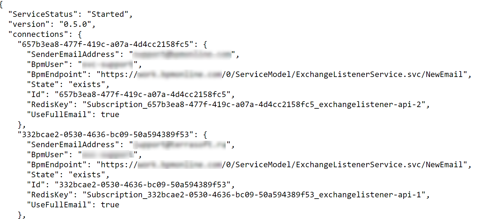
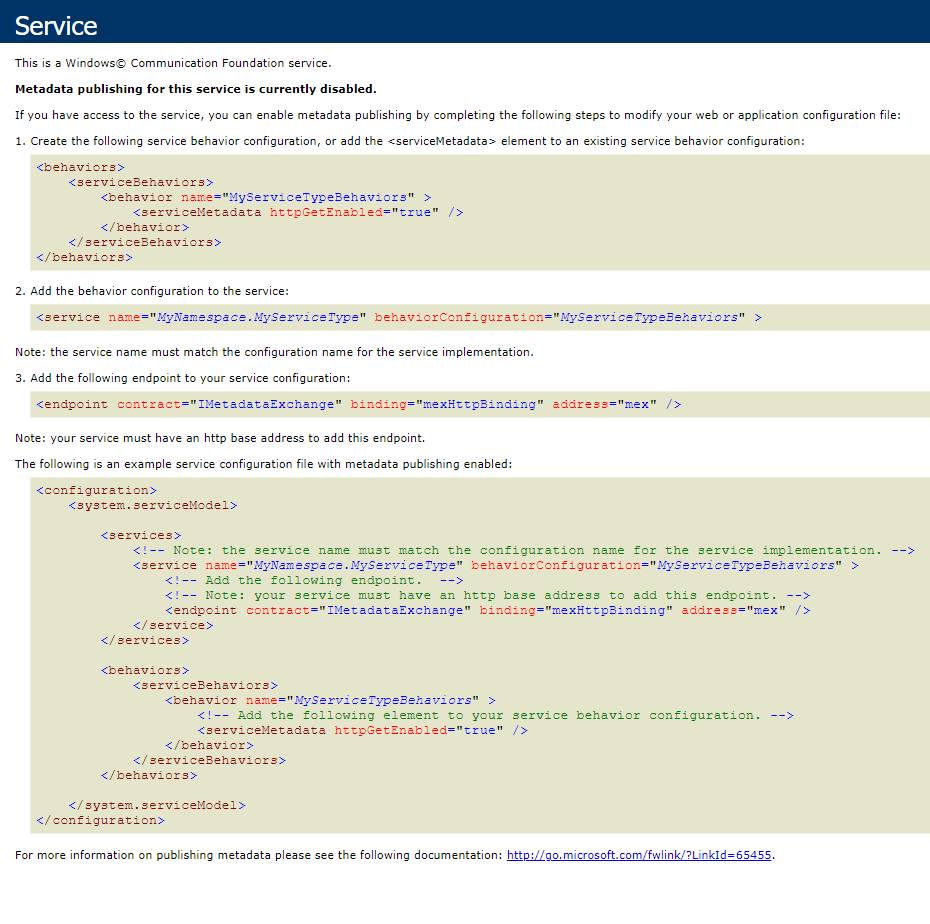

Сервис синхронизации Exchange Listener реализует синхронизацию Creatio с почтовыми сервисами MS Exchange и IMAP/SMTP, используя механизм подписки.
В данной статье описан процесс развертывания сервиса синхронизации для Creatio on-site.
Сервис состоит из двух обязательных компонентов:
-
основной модуль Exchange Listener;
-
NoSQL СУБД Redis.
Модуль Exchange Listener инициирует исходящее подключение к EWS API. При этом используются учетные данные почтового ящика и создается подписка (subscription) для получения событий при поступлении новых писем. Открытая подписка остается в памяти компонента для обеспечения максимально оперативной реакции на получение нового письма. При получении соответствующего события выполняется загрузка экземпляра письма.
Для развертывания сервиса достаточным условием является использование in-memory хранилища.
СУБД Redis используется для создания масштабируемой и отказоустойчивой системы узлов-обработчиков. Хранилище Redis содержит информацию об обслуживаемых почтовых ящиках. Это позволяет любому контейнеру обработать запросы Creatio на создание новой подписки или проверить статус конкретной подписки, независимо от того, на каком узле открыта подписка.
Обязательные требования к Redis:
-
разрешен анонимный доступ;
-
выделена отдельная база данных для работы сервиса Exchange Listener.
Способы развертывания сервиса Exchange Listener
Для развертывания сервиса предпочтительным способом является использование оркестратора Kubernetes и пакетного менеджера Helm. Подробнее >>>
Для более быстрого развертывания в среде разработки можно использовать Docker. Подробнее >>>
Развернуть сервис синхронизации с использованием Kubernetes
Для развертывания сервиса выполните следующие шаги:
-
Предварительно настройте целевое окружение:
-
Кластер Kubernetes. Подробно о том, как настроить и администрировать кластер, читайте на сайте документации Kubernetes.
-
Пакетный менеджер Helm. Установка пакетного менеджера подробно описана на сайте документации Helm.
-
-
Установите Redis. Установка Redis с использованием Helm детально описана на сайте GitHub.
Пример команды для установки Redis:
В этом примере:
default — наименование namespace, куда будет установлен Redis;
redis — произвольное имя для экземпляра Redis.
-
Установите модуль Exchange Listener. Для установки модуля скачайте helm-пакет. Доступные параметры helm-пакета описаны в таблице ниже.
Пример команды для установки Exchange Listener с использованием адреса и относительного пути сервиса:
В этом примере:
<redis_host> — адрес Redis-сервера;
<kubernetes_url> — URL или IP-адрес Kubernetes.
Адрес сервиса Exchange Listener: <kubernetes_url>/<listener_path>.
Чтобы проверить доступность, сделайте запрос по адресу: <kubernetes_url>/<listener_path>/api/listeners/status (Рис. 1).
Пример команды для установки Exchange Listener с использованием Node IP и адреса порта:
Адрес сервиса Exchange Listener — <node_IP:node_port>.
Чтобы проверить доступность, сделайте запрос по адресу: <node_IP:node_port>/api/listeners/status (Рис. 1).
Рис. 1 — Пример ответа сервиса Exchange Listener
Доступные параметры helm-пакета Exchange Listener
|
Параметр |
Описание параметра |
Значение по умолчанию |
|---|---|---|
|
replicaCount |
Количество StatefulSet-обработчиков. |
2 |
|
service.type |
Тип сервиса. Детально типы сервисов Kubernetes описаны в документации Kubernetes. |
ClusterIP |
|
service.nodePort |
Если параметр service.type равен NodePort, то в этом параметре указывается внешний порт сервиса. Детально тип NodePort описан в документации Kubernetes. |
|
|
env.host |
Адрес хоста Redis. |
|
|
env.port |
Порт хоста Redis. |
6379 |
|
env.base |
Номер базы данных Redis. |
0 |
|
ingress.enabled |
Использование переопределения адресов при помощи ingress. |
false |
|
ApiUrl |
Адрес сервиса при ingress.enabled=true. |
|
|
ingress.path |
Относительный путь сервиса. |
|
|
log4Net.level |
Уровень логирования по умолчанию. |
Info |
Для расчета требований к серверам воспользуйтесь калькулятором системных требований.
Развернуть сервис синхронизации в Docker
Для настройки сервиса необходим сервер (физический или виртуальный компьютер) с установленной ОС Linux или Windows.
Для развертывания сервиса выполните следующие шаги:
-
Предварительно настройте целевое окружение:
-
Платформа контейнеризации Docker. Подробно о том, как установить и настроить платформу, описано на сайте документации Docker.
-
СУБД Redis. Redis Server устанавливается при помощи установочного файла для ОС Windows или при помощи инструкции для ОС Linux. Необходимо разворачивать анонимный СУБД Redis. Подробнее о развертывании СУБД Redis в Docker читайте на сайте сообщества Docker Hub.
-
-
Установите и запустите модуль Exchange Listener. Для этого необходимо скачать и развернуть образ Docker-контейнера.
Рассмотрим пример команды для скачивания и запуска образа с использованием командной строки и установленного Docker.
В этом примере:
<localhost_port> — порт локального сервера;
<redis_host> — адрес redis-сервера;
<redis_database_number> — номер БД redis-сервера;
<service_name> — название сервиса (задается вручную).
<listener_version> — версия микросервиса Listener.
-
Чтобы проверить доступность развернутого Docker-контейнера, выполните команду:
Адрес сервиса Exchange Listener — localhost:<localhost_port>.
Чтобы проверить доступность, сделайте запрос по адресу: <Localhost:<localhost_port>/api/listeners/status (Рис. 2).
Настроить сервис Exchange Listener на стороне Creatio
-
Убедитесь, что анонимный сервис ExchangeListenerService доступен по адресу Адрес приложения Creatio/0/ServiceModel/ExchangeListenerService.svc (Рис. 2).
Рис. 2 — Пример ответа сервиса ExchangeListenerService -
Установите нужные значения системных настроек. Для этого:
-
Перейдите в дизайнер системы, например, по кнопке .
-
В блоке “Настройка системы” перейдите по ссылке “Системные настройки”.
-
Укажите значения системных настроек:
“ExchangeListenerServiceUri”(код “ExchangeListenerServiceUri”). Формат значения настройки: адрес сервиса, используемый при установке/api/listeners.“URL сервиса обработки событий Exchange в Creatio” (код “BpmonlineExchangeEventsEndpointUrl”). Формат значения настройки: адрес анонимного сервиса ExchangeListenerService/NewEmail. Например, https://mycreatio.com/0/ServiceModel/ExchangeListenerService.svc/NewEmail.
-
Диагностика настроек Exchange Listener
На странице диагностики настроек сервиса Exchange Listener представлены инструменты контроля и проверки работы сервиса.
Здесь вы можете:
- проверить подключение необходимой функциональности;
- убедиться в доступности сервиса;
- получить информацию о подписках;
- проверить правильность заполнения системной настройки “ExchangeListenerServiceUri”;
- проверить работоспособность почтового ящика.
Чтобы перейти на страницу диагностики настроек Exchange Listener, в адресной строке браузера добавьте “/0/ClientApp/#/IntegrationDiagnostics/ExchangeListener” к URL-адресу вашего сайта Creatio и нажмите Enter. Например:
Страница диагностики состоит из нескольких блоков с параметрами синхронизации, по которым можно запустить диагностику (Рис. 3). Чтобы отобразилась информация о параметрах подключения, необходимо в блоке с интересующим вас параметром нажать Запустить диагностику.
|
Состояние доступности функциональности |
Для данного блока диагностика запускается автоматически при открытии страницы. Выполняется проверка подключения в Creatio функциональности, необходимой для работы Exchange Listener:
Подробнее о подключении функциональности читайте в статье Механизм отключения функциональности Feature Toggle документации по разработке. |
|
Проверка доступности сервиса |
Выполняется проверка доступности сервиса Exchange Listener из вашего приложения Creatio. |
|
Получение информации по подпискам |
Выполняется проверка соединения с удаленным сервером. |
|
Проверка правильности заполнения системной настройки ExchangeListenerServiceUri |
Выполняется проверка валидности адреса, указанного в системной настройке. |
|
Проверка работоспособности почтового ящика |
Выполняется проверка работы почтовых ящиков MS Exchange. Установите признак Отправить тестовое письмо, чтобы при запуске диагностики на указанный адрес было отправлено тестовое email-сообщение. |